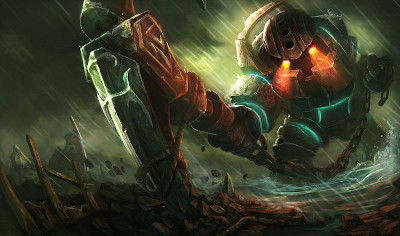

Nautilus

A lonely legend as old as the first piers sunk in Bilgewater, the armored goliath known as Nautilus roams the dark waters off the coast of the Blue Flame Isles.
Driven by a forgotten betrayal, he strikes without warning, swinging his enormous anchor to save the wretched, and drag the greedy to their doom. It is said he comes for those who forget to pay the “Bilgewater tithe”, pulling them down beneath the waves with him—an iron-clad reminder that none can escape the depths.
-
Passive
- Staggering Blow -Nautilus' first Attack against a target deals increased physical damage and roots them briefly.
-
Q
- Dredge Line -Nautilus hurls his anchor forward. Colliding with an enemy pulls them and Nautilus together, dealing magic damage. Colliding with terrain pulls Nautilus towards it.
-
W
- Titan's Wrath -Nautilus gains a temporary Shield. While it persists, his Attacks deal damage over time to his target and surrounding enemies.
-
E
- Riptide -Nautilus creates three exploding waves around himself. Each explosion damages and slows enemies.
-
R
- Depth Charge -Nautilus fires a shockwave into the earth that chases an opponent. This shockwave rips up the earth above it, knocking enemies into the air. When it reaches the opponent, the shockwave erupts, knocking his target into the air and stunning them.